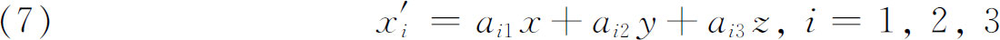
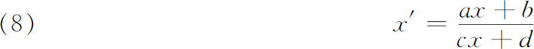
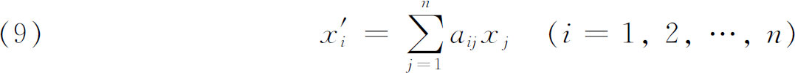
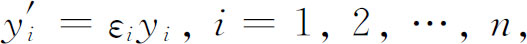
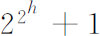
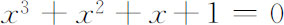
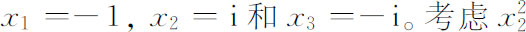
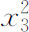
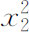
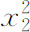

6．置换群理论
拉格朗日在他关于方程可解性的著作中（第25章第2节）引进了n个根的一些函数作为他的分析的关键，这些函数在根的某些排列下取相同的值。因此他就在这些文章中着手研究函数，目的是确定它们在n个变数（根）的n！种排列下引起的n！个可能值中能取到的不同的值。鲁菲尼、阿贝尔、伽罗瓦的后继工作使这个课题增加了重要性。n个字母的一个有理函数在根的排列或置换的某个集合下取同样的值，这个事实表明，正如我们已经看到的，这个集合是整个对称群的子群。鲁菲尼在他的《方程的一般理论》（Teoria generale delle equazioni，1799）中对这件事作了明显的考察。因此，拉格朗日所开创的是研究置换群的子群的一种方法。当然，更直接的方法是研究置换群本身，并确定它的子群。研究置换群结构或组成的两种方法都成了活跃的课题，即使不顾及它同方程可解性的联系，它本身还是被追求作为一种兴趣。置换群或排列群的理论是最终产生抽象群论的第一个重要的研究。这里我们将指出在19世纪中获得的有关置换群的一些具体定理。
拉格朗日自己肯定了一个重要结果，用近代语言叙述就是，子群的阶整除群的阶。这个定理的证明是由阿巴提（Pietro Abbati，1768—1842）在1802年9月30日的一封信中通知鲁菲尼的，此信已发表(17)。
鲁菲尼在他1799年的书中引进了传递性和本原性的概念，虽然有一些模糊。如果一个排列群的每个字母在群的各排列下被每一个别的字母所代替，则称这群为传递群。如果G是一个传递群，设n个符号或字母可分成r个不同的子集σi，i＝1，2，…，r，每个子集包含si个符号，使得G的任一个排列或是将σi的符号在自己中间排列，或是用σj来代替σi，此事对每个i＝1，2，…，r都成立，则称G为非本原的。如果n个符号不能这样分拆，则这传递群称为一个本原群。鲁菲尼还证明了在一个n阶的群中，对所有k，不存在k阶子群。
受拉格朗日和鲁菲尼的工作的鼓励，柯西写了一篇关于置换群的重要文章(18)。以方程论为背景，他证明了不存在n个字母（n次）的群，使得它对n个字母的整个对称群的指数小于不超过n的最大素数，除非这个指数是2或1。柯西用函数值的语言叙述这个定理：n个字母的非对称函数的不同的值的数目不能小于比n小的最大素数，除非它是2。
伽罗瓦在引进置换群的概念和定理方面迈出了最大的一步。他的最重要的概念是正规（不变或自共轭）子群的概念。属于伽罗瓦的另一个群论概念是两个群之间的同构的概念。这是两个群的元素之间的一一对应，使得如果在第一个群中有a·b＝c，则对第二个群的对应元素有a′·b′＝c′。他还引进了单群和合成群的概念。一个没有不变子群的群是单群；否则是合成群。关于这些概念，伽罗瓦表述了一个猜想(19)，即阶是合成数的最小单群是60阶的群。
遗憾的是在刘维尔1846年发表伽罗瓦的部分著作以前，人们不知道伽罗瓦的著作，甚至那些发表的材料也不容易读懂。另一方面，拉格朗日和鲁菲尼关于置换群的著作是人们熟知的，这些著作是用n个文字的函数所能取的函数值的语言表达的。因此，方程求解的课题失去了重要性，因而当柯西转到方程论时，他集中全力于置换群。在1844年到1846年间，他写了一大批文章。在其中一篇主要的文章(20)中，他把早先的很多结果系统化，并证明了许多关于传递的、本原的和非本原的群，关于非传递群的特殊定理。特别地，他证明了伽罗瓦的断言，即每个有限（置换）群，如果它的阶可被一个素数p除尽，就必定至少包含一个p阶子群。这篇主要文章之后又发表了大量的其他文章，刊载在1844年到1846年(21)的巴黎科学院的《周报》上。这工作的大部分是涉及n个字母的函数在字母交换下所能取的形式值（即非数字值）以及找出函数使其取给定数目的值。
在刘维尔发表了伽罗瓦的一些著作后，塞雷特在巴黎大学理学院作了演讲，并在他的《教程》的第三版中给了伽罗瓦的理论一个较好的教科书式的叙述。此后，澄清伽罗瓦关于方程可解性的思想和建立置换群理论就齐头并进了。塞雷特在他的教科书中对柯西1815年的结果给了一个改进的形式。如果n个字母的一个函数有少于p个值，其中p是小于n的最大素数，则此函数不能有两个以上的值。
塞雷特在1866年的教科书中强调的问题之一是，找出由n个字母所能形成的全部的群。这个问题早已吸引了鲁菲尼的注意，他、柯西和塞雷特本人在1850年(22)的一篇文章中给出了许多部分性的结果，就像柯克曼（Thomas Penyngton Kirkman，1806—1895）所做的一样。尽管有这许多努力和成百个有局限性的结果，这问题还是未能解决。
在伽罗瓦以后，若尔当（1838—1922）是使伽罗瓦理论显著增色的第一个人。1869年(23)他证明了一个基本结果。设G1是G0的极大自共轭（正规）子群，G2是G1的极大自共轭子群，如此之类，直到这序列终止于恒等元素。这个子群序列称为G0的合成序列。若Gi＋1是Gi中阶为r的任一自共轭子群，G1的阶为p，则Gi可分解成λ＝p/r个类。两个元素，若其中一个是另一元素和Gi＋1的一个元素的积，则属于同一类。若a是一个类的任一元素，而b是另一类的任一元素，则其积将在同一个第三类中。这些类形成一个群，以Gi＋1为它的恒等元素，这个群就称为Gi在Gi＋1下的商群或因子群，用Gi/Gi＋1表示，这是若尔当在1872年引进的符号。商群G0/G1，G1/G2，…称为G0的合成因子群，它们的阶称为合成因子或合成指数。G0中可能有多于一个合成序列。若尔当证明了除了出现的次序以外，合成因子的集合是不变的，莱比锡大学的教授赫尔德［（Ludwig）Otto Hölder，1859—1937］证明了(24)商群本身是与合成序列无关的；就是说，对任何合成序列，将有同样的商群的集合。这两个结果合称为若尔当-赫尔德定理。
（有限）置换群的知识及其与伽罗瓦关于方程理论的联系直到1870年才由若尔当组织到他的《置换和代数方程专论》这本名著中。在这本书中，若尔当和几乎所有他的前人一样，把置换群定义成置换的这样一种集合，即集合中任两成员的积仍属于这集合。我们今天在群的定义中作为公设提出的其他性质（第49章第2节）是被使用了，但或是作为这种群的明显性质，或是作为附加的条件，而不是在定义中指定。《专论》提供了新结果，并对置换群明白地建立了同构和同态的概念，后者是两个群之间的多一对应，使得a·b＝c蕴含a′·b′＝c′。若尔当添加了关于传递群和合成群的基本结果。书中还包含了若尔当对阿贝尔提出的问题的解答，即确定一个给定次数的能用根式求解的方程，以及识别一个给定的方程是否属于这个类。可解方程的群都是交换群，若尔当称它们为阿贝尔群，而阿贝尔群这个术语此后也就用于交换群了。
关于置换群的另一个重要的定理是在《专论》出现以后不久由一个挪威数学教授西罗（Ludwig Sylow，1832—1918）证明的。柯西曾经证明，阶可被一个素数p整除的每一个群，必包含一个或多个p阶子群。西罗(25)推广了柯西的定理。如果一个群的阶可被pα整除，但不被pα＋1整除，而p是素数，则此群包含一组且仅仅一组共轭的pα阶子群(26)。在同一篇文章中西罗还证明了每个pα阶的群是可解的，即极大不变子群序列的指数都是素数。
对置换群以及最终对更一般群的完全另外的探索是受纯物理的研究启发的。物理学家和矿物学家布拉维（Auguste Bravais，1811—1863）研究了运动群(27)，以确定晶体的可能结构。这个研究在数学上等价于查明行列式为＋1和-1的三个变量的线性变换的群，它引导布拉维到晶体中可能出现的32类对称的分子结构。

布拉维的工作给若尔当以深刻的印象，他着手研究他称之为群的解析表示，以及现代称之为群的表示理论。实际上，塞雷特在他1866年出版的《教程》中已经考虑了用形如

的变换来表示置换。但各类群的更为有用的表示是由若尔当引进的。他探索用形式为

的线性变换来表示置换。由于置换群是有限的，所以必须对变换加上一些限制，以使这个变换群有限。伽罗瓦曾经考虑过这样的变换(28)，且以系数和变数在一个素数阶的有限域上取值来限制它们。若尔当在1878年(29)陈述了有限周期p的线性齐次置换（9）可以线性地变换到标准型

这里εi是p次单位根。这定理很多人证明过(30)。这件事成为一个大量研究的开端，即对给定的阶确定二元型和三元型（两个变数和三个变数）的所有可能的线性置换的群。还有，对给定的线性置换群确定子群以及确定在群或子群的全部成员下保持不变的代数式，这些问题也引起了很多研究。
注意到布拉维的文章后，若尔当立即进行了关于无限群的第一个重要的研究。在他的文章《关于运动群的研究报告》（Mémoire sur les groupes de mouvements）中(31)，若尔当指出，确定全部的运动群（他仅考虑了平移和转动）等价于确定全部可能的分子系统，使得任一个群的每一个运动将对应的分子系统变换到它自己。由此他研究了各种类型的群，并将它们分类。这个结果不如下列事实的意义显著，即他的文章开创了在群的标题下研究几何变换，而且几何学家很快就挑选了这条思想路线（第38章第5节）。
19世纪中叶的另一个发展既值得注意又有启发性。很受柯西工作影响的凯莱认识到，置换群的概念可以推广。在三篇文章中(32)，凯莱引进了抽象群的概念。他把一个一般的算子符号θ用于一组元素x，y，z，…，并说如此应用的θ产生x，y，z，…的一个函数x′，y′，z′，…，他指出，特别地，θ可以是一个置换。抽象群包含很多算子θ，ø，…，而θø是两个算子的复合（乘积），复合是可结合的，但不一定是可交换的。他的群的一般定义要求算子1，α，β，…的一个集合，它们全不相同，使得其中任两个算子在任何一个次序下的积和任一个算子同它自己的积都属于该集合(33)。他举出矩阵在乘法下以及四元数（在加法下）构成群。很遗憾，凯莱对抽象群概念的引进这时没有引起注意。这部分地是由于矩阵和四元数是新的，不为人们所熟知，而能符合群的概念的很多其他数学系统或者还有待于发展，或者未被认识到可以这样归类。过早的抽象落到了聋子的耳朵里，无论它们是属于数学家们的还是属于大学生们的。
参考书目
Abel，N．H．：Œuvres complètes （1881），2 vols．，Johnson Reprint Corp．，1964．
Bachmann，P．：“Über Gauss'zahlentheoretische Arbeiten，”NachrichtenKönig．Ges．der Wiss． zu Gött．，1911，455-518．Also in Gauss's Werke，10，Part 2，1-69．
Burkhardt，H．：“Endliche discrete Gruppen，”Encyk．derMath．Wiss．，B．G．Teubner，1903-1915，Ⅰ，Part 1，208-226．
Burkhardt，H．：“Die Anfänge der Gruppentheorie und Paolo Ruffini，”Abhandlungen zur Geschichte der Mathematik，Heft 6，1892，119-159．
Burns，Josephine E．：“The Foundation Period in the History of Group Theory，”Amer．Math． Monthly，20，1913，141-148．
Dupuy，P．：“La Vie d'Evariste Galois，”Ann．del'EcoleNorm．Sup．，（2），13，1896，197-266．
Galois，Evariste：“Œuvres，”Jour．de Math．，11，1846，381-444．
Galois，Evariste：Œuvres mathématiques，Gauthier-Villars，1897．
Galois，Evariste：Ecrits et mémoires mathématiques （ed．by R．Bourgne and J．-P．Azra），Gauthier-Villars，1962．
Gauss，C．F．：Disquisitiones Arithmeticae （1801），Werke，Vol．1，König．Ges．der Wiss．，zu Göttingen，1870，English translation by Arthur A． Clarke，S． J．，Yale University Press，1966．
Hobson，E．W．：Squaring the Circle and Other Monographs，Chelsea （reprint），1953．
Hölder，Otto：“Galois'sche Theorie mit Anwendungen，”Encyk．der Math．Wiss．，B．G．Teubner，1898-1904，Ⅰ，Part 1，480-520．
Infeld，Leopold：Whom the Gods Love：The Story of Evariste Galois，McGraw-Hill，1948．
Jordan，Camille：Œuvres，4 vols．，Gauthier-Villars，1961-1964．
Jordan，Camille：Traité des substitutions et des équations algébriques （1870），Gauthier-Villars （reprint），1957．
Kiernan，B．M．：“The Development of Galois Theory from Lagrange to Artin，”Archive for History of Exact Sciences，8，1971，40-154．
Lebesgue，Henri：Notice sur la vie et les travaux de Camille Jordan，Gauthier-Villars，1923． Also in Lebesgue's Notices d'histoire des mathématiques，pp．44-65，Institut de Mathématiques，Genève，1958．
Miller，G．A．：“History of the Theory of Groups to 1900，”Collected Works，Vol．1，427-467，University of Illinois Press，1935．
Pierpont，James：“Lagrange's Place in the Theory of Substitutions，”Amer．Math．Soc．Bull．，1，1894/1895，196-204．
Pierpont，James：“Early History of Galois's Theory of Equations，”Amer．Math．Soc．Bull．，4，1898，332-340．
Smith，David Eugene：A Source Book in Mathematics，Dover （reprint），1959，Vol．1，232-252，253-260，261-266，278-285．
Verriest，G．：Œuvres mathématiques d'Evariste Galois （1897 ed．），2nd ed．，Gauthier-Villars，1951．
Wiman，A．：“Endliche Gruppen linearer Substituti onen，”Encyk．der Math．Wiss．，B．G．Teubner，1898-1904，Ⅰ，Part 1，522-554．
Wussing，H．L．：Die Genesis des abstrakten Gruppenbegriffes，VEB Deutscher Verlag der Wiss．，1969．
————————————————————
(1) 1801，Werke，Ⅰ．
(2) p素数的情况满足xn-1＝0的需要，因为若n＝pq，令y＝xq，而yp-1＝0是可解的，因此xq＝常数。当q是素数时可解，如q不是素数，可按分解n的相同方式来分解q。
(3) 在形为2μ＋1的素数中，μ一定是2h的形状，但

不一定是素数。(4) 看皮尔庞特（James Pierpont），“On an Undemonstrated Theorem of the Disquisitiones Arithmeticae，”Amer．Math．Soc．Bull．，2，1895-1896，77-83．这篇文章给了证明。高斯条件是必要的这个事实首先是由万采尔（Pierre L．Wantzel，1814—1848）所证明，见Jour．de Math．，2，1837，366-372。
(5) Jour．für Math．，1，1826，65-84＝Œuvres，1，66-94．
(6) Monatsber．Berliner Akad．，1879，205-229＝Werke，4，73-96．克罗内克的证明由皮尔庞特作了说明，见“On the Ruffini-Abelian Theorem，”Amer．Math．Soc．Bull．，2，1895-1896，200-221。
(7) Jour．für Math．，4，1829，131-156＝Œuvres，1，478-507．
(8) Œuvres，1897，33-50．
(9) Jour．de Math．，11，1846，381-444．
(10) 由于伽罗瓦自己对他的思想介绍是不清楚的，并且他引进了那么多的新概念，所以我们将借助于韦里埃斯特（Verriest）提出的一个例子（看本章末尾的书目）来弄清楚伽罗瓦理论。
(11) 对一般的n次方程，即以n个独立的量作为系数的方程，根的一个函数在根的一个置换下是不变的，或不被这个置换改变，当且仅当它保持同原来的函数恒等。如果系数全是数值，则一个函数是不变的，如果它保持数值上相同。例如对

，根是
。用x3代替x2，给出
。这同
有相同的数值。于是
在这个置换下不变。如果系数包含一些数值和一些独立的量，则根的一个函数在根的置换下保持不变，如果函数对独立的量的所有的值（这些量的定义域中的）和对根的所能取到的数值在数值上相同的话。(12) 预解式这词的这个用法与拉格朗日的用法不同。
(13) Comp．Rend．，46，1858，508-515＝Œuvres，2，5-12．
(14) Comp．Rend．，46，1858，1150-1152＝Werke，4，43-48．
(15) Jour．für Math．，59，1861，306-310＝Werke，4，53-62．
(16) Jour．de Math．，2，1837，366-372．
(17) Memorie della Società Italiana delle Scienze，10，1803，385-409．
(18) Jour．de l'Ecole Poly．，10，1815，1-28＝Œuvres，（2），1，64-90．
(19) Œuvres，1897 ed．，26．
(20) Exercices d'analyse et de physique mathématique，3，1844，151-252＝Œuvres，（2），13，171-282．
(21) Œuvres，（1），Vols．9与10．
(22) Jour．de Math．，（1），15，1850，45-70．
(23) Jour．de Math．，（2），14，1869，129-146＝Œuvres，1，241-248．
(24) Math，Ann．，34，1889，26-56．
(25) Math．Ann．，5，1872，584-594．
(26) 设H是G的子群而g是G的任一元素，则g-1 Hg是一个共轭于H的子群，H和它的所有的共轭称作G的子群的共轭系或子群的完全共轭集。
(27) Jour．de Math．，14，1849，141-180．
(28) Œuvres，1897 ed．，21-23，27-29．
(29) Jour．für Math．，84，1878，89-215，p．112 in particular＝Œuvres，2，13-139，p．36 in particular．
(30) 看穆尔（Eliakim H．Moore），Math．Ann．，50，1898，215。
(31) Annali di Mat．，（2），2，1868/1869，167-215和322-345＝Œuvres，4，231-302．
(32) Phil．Mag．，（3），34，1849，527-529＝Coll．Math．Papers，1，423-424和（4），7，1854，40-47和408-409＝Papers，2，123-130和131-132．
(33) Papers，2，124．